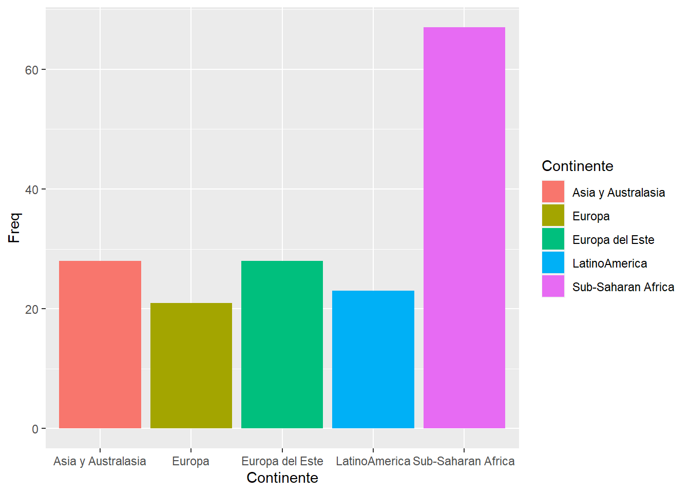
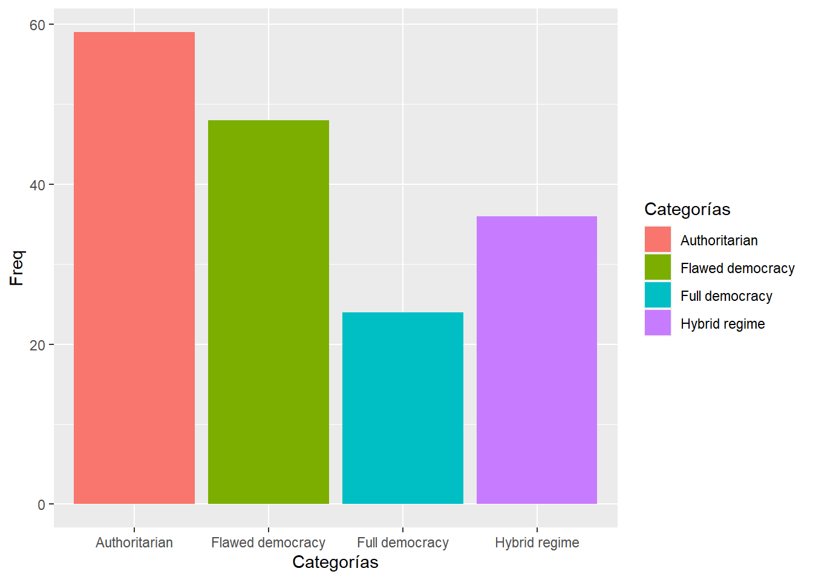
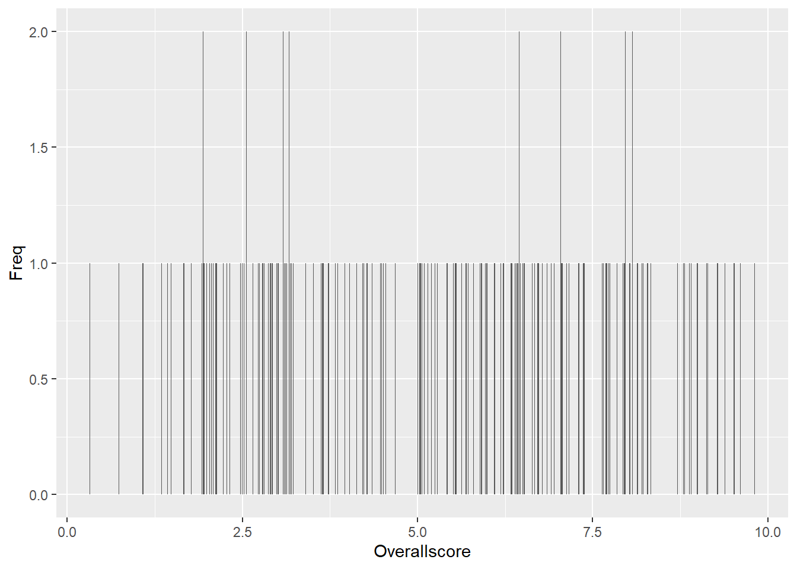

Práctica dirigida 1

FACULTAD DE CIENCIAS SOCIALES - PUCP
Curso: POL 278 - Estadística para el análisis político 1 | Semestre
2024 - 1
1. ¿Qué es R?
R es un lenguaje de programación y un entorno de software libre y de código abierto utilizado para análisis estadístico y visualización de datos. Fue desarrollado por Ross Ihaka y Robert Gentleman en la Universidad de Auckland, Nueva Zelanda, en 1993. Desde entonces, ha sido ampliamente adoptado por la comunidad científica y empresarial como una herramienta esencial para el análisis y la visualización de datos.
R cuenta con una amplia variedad de paquetes y bibliotecas que permiten el análisis estadístico, la minería de datos, el aprendizaje automático, la visualización de datos y la generación de informes. Además, su sintaxis es relativamente sencilla, lo que facilita su aprendizaje y uso para personas con distintos niveles de experiencia en programación, lo cual ha significado su uso en diversos rubros.
## Warning: package 'vembedr' was built under R version 4.3.3


3. Conceptos básicos para programar en R
Instalar R
Instalar RStudio
Usando R

3.1. Configurar el directorio de trabajo
R funciona como un entorno temporal de trabajo, lo que quiere decir que el usuario va agregando datos y objetos. Sin embargo, si los análisis no son guardados se deberán repetir las instrucciones para obtener otra vez el resultado. Por esta razón, es preciso configurar una carpeta predeterminada en nuestro ordenador, donde el programa buscará los archivos a ejecutar y guardará los archivos a conservar con cambios.
Para ver nuestro lugar de trabajo actual escribimos el siguiente comando (escriba el código en la consola, ya que si lo ejecuta desde este Rmd, obtendrá el lugar donde se encuentra este archivo):
getwd() #para saber en qué carpeta está el archivo## [1] "C:/Users/ALVARO/OneDrive/Escritorio/Trabajo/Pregrado 2023-2/Estadística 1 - PD/PracticasPOL278"Si queremos cambiar de directorio de trabajo, nos dirigirnos al menú “Session” > “Set Working Directory” > “Choose Directory”. Esto abrirá una ventana emergente, donde buscaremos la carpeta en la cual vamos a trabajar, la ubicamos y seleccionamos “Open”. Para verificar el cambio volvemos a digitar la función “getwd()” en la consola.
3.2. Sintaxis y objetos en R
El uso de R es bastante intuitivo y sigue un patrón lógico. Está compuesto de códigos y la combinación de estos códigos genera una sintaxis. Asimismo, R guarda la información de nuestras observaciones y variables a través de objetos.
En un sentido global, la estructura general de una sintaxis puede resumirse como sigue: a un objeto dado se le asigna el resultado de una función, que a su vez se ejecuta sobre un conjunto de datos especificado, con una serie de configuraciones particulares. Veamos el siguiente ejemplo ficticio.

Si se lee de izquierda a derecha, la línea de comando puede explicarse como sigue:
Primero se indica un objeto a crear, con el nombre que ustedes definan.
Luego se indica el asignador, que expresa que todo lo que esté a la derecha de la flecha se guardará en el objeto creado a la izquierda. El asignador puede ser “<-” o también “=”, para motivos del curso usaremos este último.
Luego viene la función que en este caso permite leer archivos tipo Microsoft Excel. R trabaja con funciones que están dentro de “paquetes” que la comunidad va desarrollando. Podemos hacer nuestras operaciones con diversas funciones, y no hay una sola forma de hacerlo. Si se trata de funciones que no están predeterminadas en R, debemos instalar el paquete que las contiene con el comando “install.packages()”, y antes de ejecutarla debemos abrir la libreria con el comando “library()”
Luego de la función, se abre un paréntesis que contiene los argumentos: instrucciones que especifican ciertos detalles de lo que queramos que la función realice. Los argumentos pueden escribirse de distintas maneras y va a depender de lo que queramos hacer. En nuestro ejemplo: El primer argumento indica la información a leer, en este caso indica un archivo de tipo Excel (extensión xlsx). El segundo argumento indica la hoja del archivo a leer. El tercer argumento indica qué columnas se leerán de forma específica (en este caso, las primeras diez).
Hagamos un ejemplo:
Vamos a abrir un archivo en R, utilizando la función “import” del paquete “rio”, el cual es un paquete versátil que nos permite importar datos de diversas extensiones (dta, sav, csv, xls, etc.)
Antes que todo, debemos instalar el paquete escribiendo en la consola: install.packages(“rio”)
library(rio) #Convocamos el paquete
data=import("Mosteller.csv") #Utilizamos la función import (importar) que creará un objeto en R que contenga la base de datos del archivo "Mosteller.csv" que hemos descargado. Podemos verificar la creación en el environment (ventana derecha superior)
class(data) #si quieren saber que clase de objeto es el que has creado, utilizamos la función "class" y entre paréntesis colocamos el nombre del objeto. Verán que se trata de un "data frame", es el tipo de objeto en R para las bases de datos.## [1] "data.frame"¿Qué otro tipo de objetos existen?
3.3. Tipos de objetos en R
Una parte clave para iniciar el manejo del programa es identificar los diversos objetos que podemos crear, manipular y utilizar. Para la definición de objetos en R será necesario previamente tener claridad teórica sobre lo que es una variable categórica nominal, categórica ordinal, numérica discreta y numérica continua.
Para los fines de este curso se contemplarán las siguientes objetos:
| Tipo | Descripción |
|---|---|
| Vector numérico | Vector conformado por la concatenación de números, puede representar variables numéricas continuas o discretas. Ej: 1.5 , 2.7 , 3.1 |
| Vector de factores | Vector que sirve para representar variables categóricas. Pudiendo ser factores nominales u ordinales. Ej: “costa”, “sierra”, “selva” |
| Data frames | Son hojas de datos, estructuras similares a una matriz; sin embargo, a diferencia de estas pueden almacenar objetos de distintos tipo. Generalmente nuestras bases de datos son de este tipo (como una hoja de Excel que tiene variables numéricas, categóricas, etc). |
Los vectores numéricos se crean a través de la función concatenar “c()”. Vamos a crear un vector que contenga los montos en millones de soles del presupuesto del Estado asignado a las 5 prioridades para el 2021
Presupuesto_millones=c(9879, 33132, 20991, 690, 5392) #creamos el vector (verifiquemos en el environment)
Presupuesto_millones #invocamos el vector para visualizar su contenido## [1] 9879 33132 20991 690 5392Un factor nos permite representar una variable categórica. Se crean a través de la función “factor()”, pero antes se crea como vector pues almacena las categorías en la forma de un vector con números discretos integrales (1,2,3,4,etc.), que son códigos de los valores de la variable y otro vector de caracteres interno que contiene las etiquetas de esos códigos. Creemos un factor con los nombres de las prioridades del presupuesto para el 2021:
Prioridad = c(1,2,3,4,5) #primero creamos un vector
Prioridad = factor(Prioridad, levels = c(1:5), labels = c("reactivación", "educación","salud","mujer","pobreza")) #Lo convertimos en factor. Ojo con los argumentos.
Prioridad #visualizamos su contenido## [1] reactivación educación salud mujer pobreza
## Levels: reactivación educación salud mujer pobrezaTambién podemos crear un factor ordenado para almacenar información de una variable categórica ordinal. Es casi la misma ruta, solo que añadiremos una función más para convertir el factor en ordinal. Creemos un factor ordinal ficticio que contenga el nivel de ejecución que el Estado ha mostrado en las categorías presupuestales correspondientes a las prioridades, donde 1=Mala, 2=Intermedia y 3= Buena.
Ejecucion=c(3,2,2,1,2) #creamos un vector numérico que registra los datos
Ejecucion=factor(Ejecucion) #Lo convertimos en factor
levels(Ejecucion)=c("Mala","Intermedia","Buena") #asignamos los niveles al factor
Ejecucion=ordered(Ejecucion) #indicamos que se trata de un factor ordinal (ordered)
Ejecucion #Visualizamos## [1] Buena Intermedia Intermedia Mala Intermedia
## Levels: Mala < Intermedia < BuenaFinalmente, los data frames nos permite almacenar un conjunto de datos, es decir una base de datos (bd) que tiene filas y columnas. Creemos la base de datos “PP2024” que contenga todos los objetos que hemos creado:
PP2024 = data.frame(Prioridad,Presupuesto_millones,Ejecucion)
PP2024 # Visualice la base de datos## Prioridad Presupuesto_millones Ejecucion
## 1 reactivación 9879 Buena
## 2 educación 33132 Intermedia
## 3 salud 20991 Intermedia
## 4 mujer 690 Mala
## 5 pobreza 5392 Intermediastr(PP2024) # Visualice la estructura de la BD## 'data.frame': 5 obs. of 3 variables:
## $ Prioridad : Factor w/ 5 levels "reactivación",..: 1 2 3 4 5
## $ Presupuesto_millones: num 9879 33132 20991 690 5392
## $ Ejecucion : Ord.factor w/ 3 levels "Mala"<"Intermedia"<..: 3 2 2 1 2names(PP2024) #Visualice los nombres de las variables de la BD## [1] "Prioridad" "Presupuesto_millones" "Ejecucion"Cuando queramos invocar una variable específica de una base de datos utilizaremos “$”, entre la base de datos y la variable que queremos invocar.
PP2024$Prioridad #invocamos la variable prioridad de la base de datos## [1] reactivación educación salud mujer pobreza
## Levels: reactivación educación salud mujer pobrezaclass(PP2024$Ejecucion) #vemos de que clase es la variable ejecución de la bbdd## [1] "ordered" "factor"4. Análisis descriptivo en R
Mosteller (1995)1 realizó un estudio longitudinal sobre el impacto del tamaño de la clase en los primeros grados escolares, sobre el desempeño estudiantil y el desarrollo personal.
A tomar en cuenta
- Un estudio longitudinal es aquel en el que se hace un seguimiento a participantes a lo largo del tiempo.
Este estudio en concreto duró de 1985 a 1989 y participaron 11,601 estudiantes.
Durante los cuatro años del estudio, los estudiantes fueron asignados aleatoriamente a clases pequeñas, a clases de tamaño normal o a clases de tamaño normal con ayuda.
Aunque el programa se detuvo en 1989 despu√©s de que la primera clase de jard√≠n de infancia del programa terminara el tercer grado, la recopilaci√≥n de informaci√≥n (por ejemplo, el rendimiento en los exámenes de octavo grado, el promedio general de la escuela secundaria) continu√≥ hasta el final de la asistencia de los participantes a la escuela secundaria. Para esta sesi√≥n no vamos a examinar las hip√≥tesis o resultados del trabajo de Mosteller (1995), pero s√≠ vamos a utilizar parte de su base de datos para el análisis descriptivo üòå.
Para ello, nos planteamos la siguiente pregunta de investigación, que nos guiará durante toda la sesión de hoy:
¿Cuáles son las características de los paises de acuerdo a su régimen y ubicación geográfica?
Esta pregunta nos permite realizar un análisis descriptivo. Por ello, la responderemos durante toda la sesión. > >
¡Manos a la obra!
Lo primero que debemos hacer para responder la pregunta de investigación es saber qué base de datos vamos a utilizar. Luego, importamos nuestra base de datos.
library(rio)
data=import("DemocracyIndex2022.xlsx") Es necesario saber el tipo de variable que vamos a trabajar. Por ello, exploramos las variables que tiene nuestra base de datos:
- chr, factor -> variable nominal
- ordered factor -> variable ordinal
- num, int -> variable numérica
names(data)## [1] "País" "Overallscore"
## [3] "Rank" "Change_rank_previous_year"
## [5] "Electoral_process_pluralism" "Functioning_government"
## [7] "Political_participation" "Political_culture"
## [9] "Civil_liberties" "Categorías"
## [11] "Continente"str(data)## 'data.frame': 167 obs. of 11 variables:
## $ País : chr "Afghanistan" "Albania" "Algeria" "Angola" ...
## $ Overallscore : num 0.32 6.41 3.66 3.96 6.85 5.63 8.71 8.2 2.87 2.52 ...
## $ Rank : num 167 64 113 109 50 82 15 20 134 142 ...
## $ Change_rank_previous_year : num 0 4 0 13 0 7 -6 0 7 2 ...
## $ Electoral_process_pluralism: num 0 7 3.08 4.5 9.17 7.92 10 9.58 0.5 0.42 ...
## $ Functioning_government : num 0.07 6.43 2.5 3.21 5 5.71 8.57 7.14 2.86 2.71 ...
## $ Political_participation : num 0 5 3.89 4.44 7.78 6.11 7.78 8.89 3.33 3.33 ...
## $ Political_culture : num 1.25 6.25 5 5 4.38 3.13 7.5 6.88 5 4.38 ...
## $ Civil_liberties : num 0.29 7.35 3.82 2.65 7.94 5.29 9.71 8.53 2.65 1.76 ...
## $ Categorías : chr "Authoritarian" "Flawed democracy" "Authoritarian" "Authoritarian" ...
## $ Continente : chr "Asia y Australasia" "Europa del Este" "Sub-Saharan Africa" "Sub-Saharan Africa" ...El contenido de cada variable lo podemos observar en el siguiente diccionario de datos:
-Pais: nombre del pais -OverallScore: puntaje promedio del país. -Rank: puesto del país en el indice por puntaje promedio. -Change_rank_previous_year: comparación de puesto actual respecto del año anterior. -Electoral_process_pluralism: Puntaje de medición de pluralismo político-electoral. -Functioning_government: puntaje de medición del funcionamiento del gobierno. -Political_participation: puntaje de medición de participación política. -Political_culture: puntaje de medición de la cultura política. -Civil_liberties: puntaje en la medición de libertades civiles. -Categorías: tipo de régimen. -Continente: región a la que pertenece el país analizado.
4.1. Formateo de variables y frecuencia
Siempre antes de comenzar a realizar nuestro análisis, debemos identificar la estructura de las variables y verificar que estén bien “configuradas”. Es decir que la escala de la variable coincida con el objeto en R.
Por ejemplo, debemos asegurarnos que una variable categórica no esté configurada como numérica en R, y viceversa.
Variable “Continente” Exploramos frecuencias
library(tidyverse) #no olvidar llamar a la librería
data %>%
group_by(Continente) %>%
summarize(Freq=n())## # A tibble: 5 × 2
## Continente Freq
## <chr> <int>
## 1 Asia y Australasia 28
## 2 Europa 21
## 3 Europa del Este 28
## 4 LatinoAmerica 23
## 5 Sub-Saharan Africa 67Exploramos el formato de la variable
class(data$Continente) ## [1] "character"Categorizamos como corresponde. En este caso, “continente” es una variable nominal.
class(data$Continente) #comprobamos que se ha recategorizado bien## [1] "character"data %>%
group_by(Continente) %>%
summarize(Freq=n())## # A tibble: 5 × 2
## Continente Freq
## <chr> <int>
## 1 Asia y Australasia 28
## 2 Europa 21
## 3 Europa del Este 28
## 4 LatinoAmerica 23
## 5 Sub-Saharan Africa 67La tabla anterior se llama tabla de frecuencias, y nos permite observar cuántas observaciones existen por cada variable.
En el caso anterior, la tabla nos indica que, de todos los países que forman parte de este estudio, 28 pertenecen a la región de Asia y Australasia, 21 pertenecen a Europa, 28 a Europa del Este, 23 a Latinoamérica y 67 a África Sub-Sahariana.
Asimismo, podemos explorar las frecuencias de manera gráfica con la
ayuda del paquete ggplot2 . Para ello, antes debemos de
crear una tabla y crear un objeto, lo llamaremos
para_grafico
para_graficoContinente=data %>%
group_by(Continente) %>%
summarize(Freq=n())Si no contamos con el paquete ggplot lo instalamos insertando el
siguiente código en un chunk:
install.packages("ggplot2")
install.packages("ggplot2")## Warning: package 'ggplot2' is in use and will not be installedlibrary(ggplot2)
ggplot(para_graficoContinente, aes(x=Continente, y=Freq, fill=Continente)) +
geom_bar(stat = "identity") 
Podemos personalizar el gráfico :)
library(ggplot2)
ggplot(para_graficoContinente, aes(x=Continente, y=Freq, fill=Continente)) +
geom_bar(stat = "identity")+
ggtitle("Distribución de países por continente") +
xlab("Continente") + ylab("Frecuencia")+
geom_text(aes(label=round(Freq,1)), vjust=1.30, color="black", size=3)+
theme(panel.background=element_rect(fill = "white", colour = "white"))
Variable “Categorías”:
Al igual que con “Continente”, queremos saber el tipo de régimen de cada país observado. Para ello, realizamos el análisis de la variable en cuestión (“Categorías”)
class(data$Categorías) ## [1] "character"data %>%
group_by(Categorías) %>%
summarize(Freq=n())## # A tibble: 4 × 2
## Categorías Freq
## <chr> <int>
## 1 Authoritarian 59
## 2 Flawed democracy 48
## 3 Full democracy 24
## 4 Hybrid regime 36Se observa que, de los países analizados en el índice de la democtracia, 59 países son coniderados como Autoritarismo, 36 como Regímenes híbridos, 48 como Democracia imperfecta y solo 24 como Democracia Plena.
Creemos un gráfico de barras para visualizar mejor los países por tipo de régimen.
para_graficoReg=data %>%
group_by(Categorías) %>%
summarize(Freq=n())#tabla de frecuencias
library(ggplot2)
ggplot(para_graficoReg, aes(x=Categorías, y=Freq, fill=Categorías)) +
geom_bar(stat = "identity")
Personalicemos el gráfico :)
library(ggplot2)
ggplot(para_graficoReg, aes(x=Categorías, y=Freq, fill=Categorías)) +
geom_bar(stat = "identity")+
ggtitle("Distribución de países por tipo de régimen") +
xlab("Tipo de régimen") + ylab("Frecuencia")+
geom_text(aes(label=round(Freq,1)), vjust=1.30, color="black", size=3)+
scale_fill_brewer(name="Tipo de Régimen",palette="Pastel1")+
theme(panel.background=element_rect(fill = "white", colour = "white"))Las demás variables son num√©ricas y están configuradas como vectores num√©ricos de números enteros (integer), por lo cual lo dejamos as√≠ üò∏.
4.2 Media y mediana
Entonces, una vez configurados adecuadamente nuestros objetos, pidamos los estadísticos de tendencia central para nuestras variables de interés, esto es, el puntaje total (OversallScore)
Antes instalamos algunos paquetes que utilizaremos
- install.packages(“DescTools”) para pedir los estadísticos de tendencia central
Primero, nos piden saber cuál es el promedio de puntaje de todos los países analizados. Para ello, usamos el comando “mean”, que significa “media o promedio”.
library(DescTools)
library(tidyverse)
data %>% summarise(media = mean(Overallscore)) #este comando nos permitirá calcular la media. Consejo: leer este comando de derecha a izquierda## media
## 1 5.293174Este resultado quiere decir que el puntaje promedio de todos los países analizados es de 5.29 puntos.
En segundo lugar, nos piden calcular la mediana de los puntajes. Esta medida es más robusta que la media, pues resiste valores extremos.
library(DescTools)
data %>% summarise(mediana = median(Overallscore)) #calcular la mediana. Al igual que con la media, se sugiere leer el comando de derecha a izquierda.## mediana
## 1 5.54Esto quiere decir que, hasta la mitad de países analizados tienen una puntuación de hasta 5.54 puntos.
Grafiquemos
Primero, seleccionemos los datos que queremos utilizar.
para_graficoPunt = data %>%
group_by(Overallscore) %>%
summarize(Freq=n())Como nuestra variable (OverallScore) es numérica, esta vez pediremos un histograma. Es similar a un gráfico de barras, solo que esta vez todas las barras se encuentran juntas y no separadas.
library(ggplot2) #no olvidar llamar al paquete
ggplot(para_graficoPunt, aes(x=Overallscore, y=Freq)) +
geom_histogram(stat = "identity") ## Warning in geom_histogram(stat = "identity"): Ignoring unknown parameters:
## `binwidth`, `bins`, and `pad` Si lo queremos personalizar :)
ggplot(para_graficoPunt, aes(x=Overallscore, y=Freq)) +
geom_histogram(fill ="blue", stat = "identity") +
ggtitle("Puntaje promedio por país") +
xlab("Puntaje") + ylab("Frecuencia") +
theme(panel.background=element_rect(fill = "lightgray", colour = "black"))## Warning in geom_histogram(fill = "blue", stat = "identity"): Ignoring unknown
## parameters: `binwidth`, `bins`, and `pad` El histograma muestra una distribución asimétrica sesgada con
sesgo negativo o a la izquierda. Esto quiere decir que existe
una concentración de datos hacia la derecha.
El histograma muestra una distribución asimétrica sesgada con
sesgo negativo o a la izquierda. Esto quiere decir que existe
una concentración de datos hacia la derecha.
También podemos dividir las medias por grupo. Para ello, usamos el comando “group_by”.
data%>%
group_by(Continente)%>%
summarise(media=mean(Overallscore))## # A tibble: 5 × 2
## Continente media
## <chr> <dbl>
## 1 Asia y Australasia 5.46
## 2 Europa 8.36
## 3 Europa del Este 5.39
## 4 LatinoAmerica 5.79
## 5 Sub-Saharan Africa 4.05Podemos realizar la misma operación con la mediana
data%>%
group_by(Continente)%>%
summarise(mediana=median(Overallscore))## # A tibble: 5 × 2
## Continente mediana
## <chr> <dbl>
## 1 Asia y Australasia 6.10
## 2 Europa 8.28
## 3 Europa del Este 6.28
## 4 LatinoAmerica 6.34
## 5 Sub-Saharan Africa 3.64Y también podemos resumir todo en una misma tabla. Este tipo de tabla se llama Tabla resumen
data%>%
group_by(Continente)%>%
summarise(media=mean(Overallscore), mediana=median(Overallscore))## # A tibble: 5 × 3
## Continente media mediana
## <chr> <dbl> <dbl>
## 1 Asia y Australasia 5.46 6.10
## 2 Europa 8.36 8.28
## 3 Europa del Este 5.39 6.28
## 4 LatinoAmerica 5.79 6.34
## 5 Sub-Saharan Africa 4.05 3.64